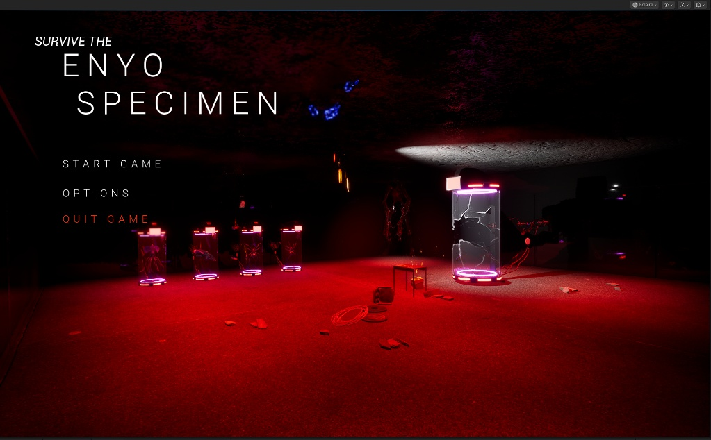

Game Design & Développement
Création de Jeux Vidéo
Prototypes jouables, level design, mécaniques de gameplay, narration interactive et intégration d'assets 3D.
Gameplay
Emplacement Vidéo Gameplay (.mp4)
Démonstration des mécaniques
Asset 3D
Emplacement Asset / Niveau 3D (.glb)
Inspecter le modèle à 360°
Screenshot
